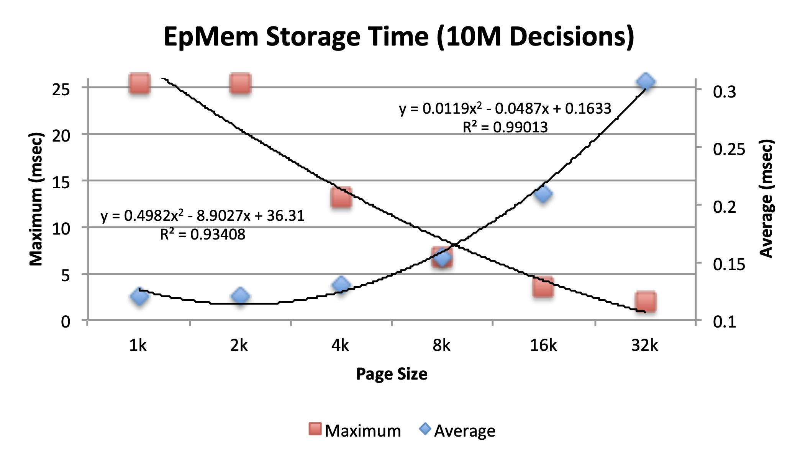

🚧 Under Construction 🚧¶
The HTML version of the manual is currently under construction. If you find it difficult to read, there is a PDF version available here.
Episodic Memory¶
Episodic memory is a record of an agent’s stream of experience. The episodic storage mechanism will automatically record episodes as a Soar agent executes. The agent can later deliberately retrieve episodic knowledge to extract information and regularities that may not have been noticed during the original experience and combine them with current knowledge such as to improve performance on future tasks.
This chapter is organized as follows: episodic memory structures in working
memory; episodic storage;
retrieving episodes; and a discussion of
performance. The detailed behavior of episodic memory is
determined by numerous parameters that can be controlled and configured via the
epmem command.
Please refer to the documentation for the epmem command.
Working Memory Structure¶
Upon creation of a new state in working memory, the architecture creates the following augmentations to facilitate agent interaction with episodic memory:
As rules augment the command structure in order to retrieve episodes, episodic memory augments the result structure in response. Production actions should not remove augmentations of the result structure directly, as episodic memory will maintain these WMEs.
The value of the present-id augmentation is an integer and will update to expose to the agent the current episode number. This information is identical to what is available via the time statistic and the present-id retrieval meta-data (7.3.4).
Episodic Storage¶
Episodic memory records new episodes without deliberate action/consideration by the agent. The timing and frequency of recording new episodes is controlled by the phase and trigger parameters. The phase parameter sets the phase in the decision cycle (default: end of each decision cycle) during which episodic memory stores episodes and processes commands. The value of the trigger parameter indicates to the architecture the event that concludes an episode: adding a new augmentation to the output-link (default) or each decision cycle.
For debugging purposes, the force parameter allows the user to manually request that an episode be recorded (or not) during the current decision cycle. Behavior is as follows:
The value of the force parameter is initialized to off every decision cycle. During the phase of episodic storage, episodic memory tests the value of the force parameter; if it has a value other than of off, episodic memory follows the force d policy irrespective of the value of the trigger parameter.
Episode Contents¶
When episodic memory stores a new episode, it captures the entire top-state of working memory. There are currently two exceptions to this policy:
Episodic memory only supports WMEs whose attribute is a constant. Behavior is currently undefined when attempting to store a WME that has an attribute that is an identifier.
The exclusions parameter allows the user to specify a set of attributes for which Soar will not store WMEs. The storage process currently walks the top-state of working memory in a breadth-first manner, and any WME that is not reachable other than via an excluded WME will not be stored. By default, episodic memory excludes the epmem and smem structures, to prevent encoding of potentially large and/or frequently changing memory retrievals.
Storage Location¶
Episodic memory uses SQLite to facilitate efficient and standardized storage and querying of episodes. The episodic store can be maintained in memory or on disk (per the database and path parameters). If the store is located on disk, users can use any standard SQLite programs/components to access/query its contents. See the later discussion on performance for additional parameters dealing with databases on disk.
Note that changes to storage parameters, for example database, path and append will
not have an effect until the database is used after an initialization. This happens either
shortly after launch (on first use) or after a database initialization command is issued. To
switch databases or database storage types while running, set your new parameters and then
perform an epmem --init command.
The path parameter specifies the file system path the database is stored in. When path is set to a valid file system path and database mode is set to file, then the SQLite database is written to that path.
The append parameter will determine whether all existing facts stored in a database on disk will be erased when episodic memory loads. Note that this affects init-soar also. In other words, if the append setting is off, all episodes stored will be lost when an init-soar is performed. For episodic memory, append mode is off by default.
Note: As of version 9.3.3, Soar now uses a new schema for the episodic memory database. This means databases from 9.3.2 and below can no longer be loaded. A conversion utility will be available in Soar 9.4 to convert from the old schema to the new one.
Retrieving Episodes¶
An agent retrieves episodes by creating an appropriate command (we detail the types of commands below) on the command link of a state’s epmem structure. At the end of the phase of each decision, after episodic storage, episodic memory processes each state’s epmem command structure. Results, meta-data, and errors are placed on the result structure of that state’s epmem structure.
Only one type of retrieval command (which may include optional modifiers) can be issued per state in a single decision cycle. Malformed commands (including attempts at multiple retrieval types) will result in an error:
After a command has been processed, episodic memory will ignore it until some aspect of the command structure changes (via addition/removal of WMEs). When this occurs, the result structure is cleared and the new command (if one exists) is processed.
All retrieved episodes are recreated exactly as stored, except for any operators that have an acceptable preference, which are recreated with the attribute operator*. For example, if the original episode was:
A retrieval of the episode would become:
Cue-Based Retrievals¶
Cue-based retrieval commands are used to search for an episode in the store that best matches an agent-supplied cue, while adhering to optional modifiers. A cue is composed of WMEs that partially describe a top-state of working memory in the retrieved episode. All cue-based retrieval requests must contain a single ^query cue and, optionally, a single ^neg-query cue.
A ^querycue describes structures desired in the retrieved episode, whereas a ^neg-query cue describes non-desired structures. For example, the following Soar production creates a ^querycue consisting of a particular state name and a copy of a current value on the input-link structure:
sp {epmem*sample*query
(state <s> ^epmem.command <ec>
^io.input-link.foo <bar>)
-->
(<ec> ^query <q>)
(<q> ^name my-state-name
^io.input-link.foo <bar>)
}
As detailed below, multiple prior episodes may equally match the structure and contents of an agent’s cue. Nuxoll has produced initial evidence that in some tasks, retrieval quality improves when using activation of cue WMEs as a form of feature weighting. Thus, episodic memory supports integration with working memory activation (see Section 9.3.2.1 on page 221). For a theoretical discussion of the Soar implementation of working memory activation, consider readingComprehensive Working Memory Activation in Soar (Nuxoll, A., Laird, J., James, M., ICCM 2004).
The cue-based retrieval process can be thought of conceptually as a nearest-neighbor search. First, all candidate episodes, defined as episodes containing at least one leaf WME (a cue WME with no sub-structure) in at least one cue, are identified. Two quantities are calculated for each candidate episode, with respect to the supplied cue(s): the cardinality of the match (defined as the number of matching leaf WMEs) and the activation of the match (defined as the sum of the activation values of each matching leaf WME). Note that each of these values is negated when applied to a negative query. To compute each candidate episode’s match score, these quantities are combined with respect to the balance parameter as follows:
Performing a graph match on each candidate episode, with respect to the structure of the cue, could be very computationally expensive, so episodic memory implements a two-stage matching process. An episode with perfect cardinality is considered a perfect surface match and, per the graph-match parameter, is subjected to further structural matching. Whereas surface matching efficiently determines if all paths to leaf WMEs exist in a candidate episode, graph matching indicates whether or not the cue can be structurally unified with the candidate episode (paying special regard to the structural constraints imposed by shared identifiers). Cue-based matching will return the most recent structural match, or the most recent candidate episode with the greatest match score.
A special note should be made with respect to how short- vs. long-term identifiers (see Section 6.2 on page 146) are interpreted in a cue. Short-term identifiers are processed much as they are in working memory – transient structures. Cue matching will try to find any identifier in an episode (with respect to WME path from state) that can apply. Long- term identifiers, however, are treated as constants. Thus, when analyzing the cue, episodic memory will not consider long-term identifier augmentations, and will only match with the same long-term identifier (in the same context) in an episode.
The case-based retrieval process can be further controlled using optional modifiers:
The before command requires that the retrieved episode come relatively before a supplied time:
The after command requires that the retrieved episode come relatively after a sup- plied time:
The prohibit command requires that the time of the retrieved episode is not equal to a supplied time:
Multiple prohibit command WMEs may be issued as modifiers to a single CB retrieval.
If no episode satisfies the cue(s) and optional modifiers an error is returned:
If an episode is returned, there is additional meta-data supplied (7.3.4).
Absolute Non-Cue-Based Retrieval¶
At time of storage, each episode is attributed a unique time. This is the current value of time statistic and is provided as the memory-id meta-data item of retrieved episodes. An absolute non-cue-based retrieval is one that requests an episode by time. An agent issues an absolute non-cue-based retrieval by creating a WME on the command structure with attribute retrieve and value equal to the desired time:
Supplying an invalid value for the retrieve command will result in an error.
The time of the first episode in an episodic store will have value 1 and each subsequent episode’s time will increase by 1. Thus the desired time may be the mathematical result of operations performed on a known episode’s time.
The current episodic memory implementation does not implement any episodic store dynamics, such as forgetting. Thus any integer time greater than 0 and less than the current value of the time statistic will be valid. However, if forgetting is implemented in future versions, no such guarantee will be made.
Relative Non-Cue-Based Retrieval¶
Episodic memory supports the ability for an agent to "play forward" episodes using relative non-cue-based retrievals.
Episodic memory stores the time of the last successful retrieval (non-cue-based or cue-based). Agents can indirectly make use of this information by issuing next or previous commands. Episodic memory executes these commands by attempting to retrieve the episode immediately proceeding/preceding the last successful retrieval (respectively). To issue one of these commands, the agent must create a new WME on the command link with the appropriate attribute (next or previous) and value of an arbitrary identifier:
If no such episode exists then an error is returned.
Currently, if the time of the last successfully retrieved episode is known to the agent (as could be the case by accessing result meta-data), these commands are identical to performing an absolute non-cue-based retrieval after adding/subtracting 1 to the last time (respectively). However, if an episodic store dynamic like forgetting is implemented, these relative commands are guaranteed to return the next/previous valid episode (assuming one exists).
Retrieval Meta-Data¶
The following list details the WMEs that episodic memory creates in the result link of the epmem structure wherein a command was issued:
retrieved <retrieval-root> If episodic memory retrieves an episode, that
memory is placed here. This WME is an identifier that is treated as the root of
the state that was used to create the episodic memory. If the retrieve command was
issued with an invalid time, the value of this WME will be no-memory.
success <query> <optional-neg-query> If the cue-based retrieval was successful, the WME will have the status as the attribute and the value of the identifier of the query (and neg-query, if applicable).
match-score This WME is created whenever an episode is successfully retrieved from a cue-based retrieval command. The WME value is a decimal indicating the raw match score for that episode with respect to the cue(s).
cue-size This WME is created whenever an episode is successfully retrieved from a cue-based retrieval command. The WME value is an integer indicating the number of leaf WMEs in the cue(s).
normalized-match-score This WME is created whenever an episode is success- fully retrieved from a cue-based retrieval command. The WME value is the decimal result of dividing the raw match score by the cue size. It can hypothetically be used as a measure of episodic memory’s relative confidence in the retrieval.
match-cardinality This WME is created whenever an episode is successfully
retrieved from a cue-based retrieval command. The WME value is an integer
indicating the number of leaf WMEs matched in the ^querycue minus those
matched in the ^neg-querycue.
memory-id This WME is created whenever an episode is successfully retrieved from a cue-based retrieval command. The WME value is an integer indicating the time of the retrieved episode.
present-id This WME is created whenever an episode is successfully retrieved from a cue-based retrieval command. The WME value is an integer indicating the current time, such as to provide a sense of "now" in episodic memory terms. By comparing this value to the memory-id value, the agent can gain a sense of the relative time that has passed since the retrieved episode was recorded.
graph-match This WME is created whenever an episode is successfully retrieved from a cue-based retrieval command and the graph-match parameter was on. The value is an integer with value 1 if graph matching was executed successfully and 0 otherwise.
mapping <mapping-root> This WME is created whenever an episode is success- fully
retrieved from a cue-based retrieval command, the graph-match parameter was on,
and structural match was successful on the retrieved episode. This WME provides
a mapping between identifiers in the cue and in the retrieved episode. For each
identifier in the cue, there is anodeWME as an augmentation to the mapping
identifier. The node has a cue augmentation, whose value is an identifier in the
cue, and a retrieved augmentation, whose value is an identifier in the retrieved
episode. In a graph match it is possible to have multiple identifier mappings –
this map represents the "first" unified mapping (with respect to episodic memory
algorithms).
Performance¶
There are currently two sources of "unbounded" computation: graph matching and cue- based queries. Graph matching is combinatorial in the worst case. Thus, if an episode presents a perfect surface match, but imperfect structural match (i.e. there is no way to unify the cue with the candidate episode), there is the potential for exhaustive search. Each identifier in the cue can be assigned one of any historically consistent identifiers (with respect to the sequence of attributes that leads to the identifier from the root), termed a literal. If the identifier is a multi-valued attribute, there will be more than one candidate literals and this situation can lead to a very expensive search process. Currently there are no heuristics in place to attempt to combat the expensive backtracking. Worst-case performance will be combinatorial in the total number of literals for each cue identifier (with respect to cue structure).
The cue-based query algorithm begins with the most recent candidate episode and will stop search as soon as a match is found (since this episode must be the most recent). Given this procedure, it is trivial to create a two-WME cue that forces a linear search of the episodic store. Episodic memory combats linear scan by only searching candidate episodes, i.e. only those that contain a change in at least one of the cue WMEs. However, a cue that has no match and contains WMEs relevant to all episodes will force inspection of all episodes. Thus, worst-case performance will be linear in the number of episodes.
Performance Tweaking¶
When using a database stored to disk, several parameters become crucial to performance. The first is commit , which controls the number of episodes that occur between writes to disk. If the total number of episodes (or a range) is known ahead of time, setting this value to a greater number will result in greatest performance (due to decreased I/O).
The next two parameters deal with the SQLite cache, which is a memory store used to speed operations like queries by keeping in memory structures like levels of index B+-trees. The first parameter, page-size , indicates the size, in bytes, of each cache page. The second parameter, cache-size , suggests to SQLite how many pages are available for the cache. Total cache size is the product of these two parameter settings. The cache memory is not pre- allocated, so short/small runs will not necessarily make use of this space. Generally speaking, a greater number of cache pages will benefit query time, as SQLite can keep necessary meta- data in memory. However, some documented situations have shown improved performance from decreasing cache pages to increase memory locality. This is of greater concern when dealing with file-based databases, versus in-memory. The size of each page, however, may be important whether databases are disk- or memory-based. This setting can have far-reaching consequences, such as index B+-tree depth. While this setting can be dependent upon a particular situation, a good heuristic is that short, simple runs should use small values of the page size (1k, 2k, 4k), whereas longer, more complicated runs will benefit from larger values (8k, 16k, 32k, 64k). One known situation of concern is that as indexed tables accumulate many rows (~millions), insertion time of new rows can suffer an infrequent, but linearly increasing burst of computation. In episodic memory, this situation will typically arise with many episodes and/or many working memory changes. Increasing the page size will reduce the intensity of the spikes at the cost of increasing disk I/O and average/total time for episode storage. Thus, the settings of page size for long, complicated runs establishes the

desired balance of reactivity (i.e. max computation) and average speed. To ground this discussion, the Figure 7.1 depicts maximum and average episodic storage time (the value of the epmem storage timer, converted to milliseconds) with different page sizes after 10 million decisions (1 episode/decision) of a very basic agent (i.e. very few working memory changes per episode) running on a 2.8GHz Core i7 with Mac OS X 10.6.5. While only a single use case, the cross-point of these data forms the basis for the decision to default the parameter at 8192 bytes.
The next parameter is optimization , which can be set to either safety or performance. The safety parameter setting will use SQLite default settings. If data integrity is of importance, this setting is ideal. The performance setting will make use of lesser data consistency guarantees for significantly greater performance. First, writes are no longer synchronous with the OS (synchronous pragma), thus episodic memory won’t wait for writes to complete before continuing execution. Second, transaction journaling is turned off (journalmode pragma), thus groups of modifications to the episodic store are not atomic (and thus interruptions due to application/os/hardware failure could lead to inconsistent database state). Finally, upon initialization, episodic memory maintains a continuous exclusive lock to the database (locking mode pragma), thus other applications/agents cannot make simultaneous read/write calls to the database (thereby reducing the need for potentially expensive system calls to secure/release file locks).
Finally, maintaining accurate operation timers can be relatively expensive in Soar. Thus, these should be enabled with caution and understanding of their limitations. First, they will affect performance, depending on the level (set via the timers parameter). A level of three, for instance, times every step in the cue-based retrieval candidate episode search. Furthermore, because these iterations are relatively cheap (typically a single step in the linked-list of a b+-tree), timer values are typically unreliable (depending upon the system, resolution is 1 microsecond or more).